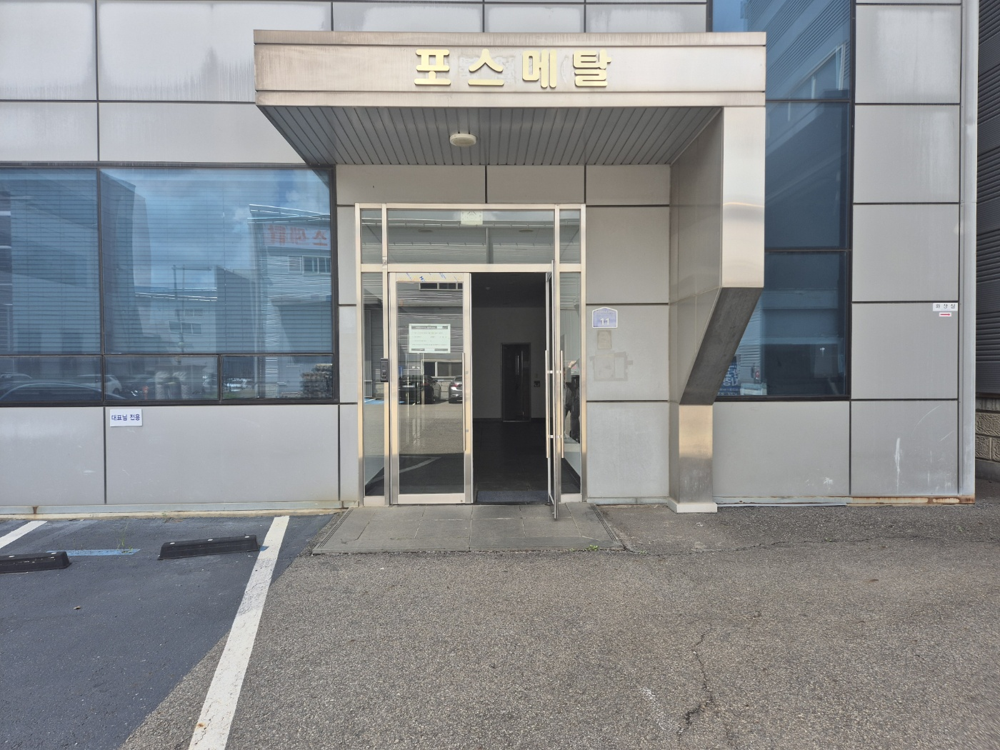
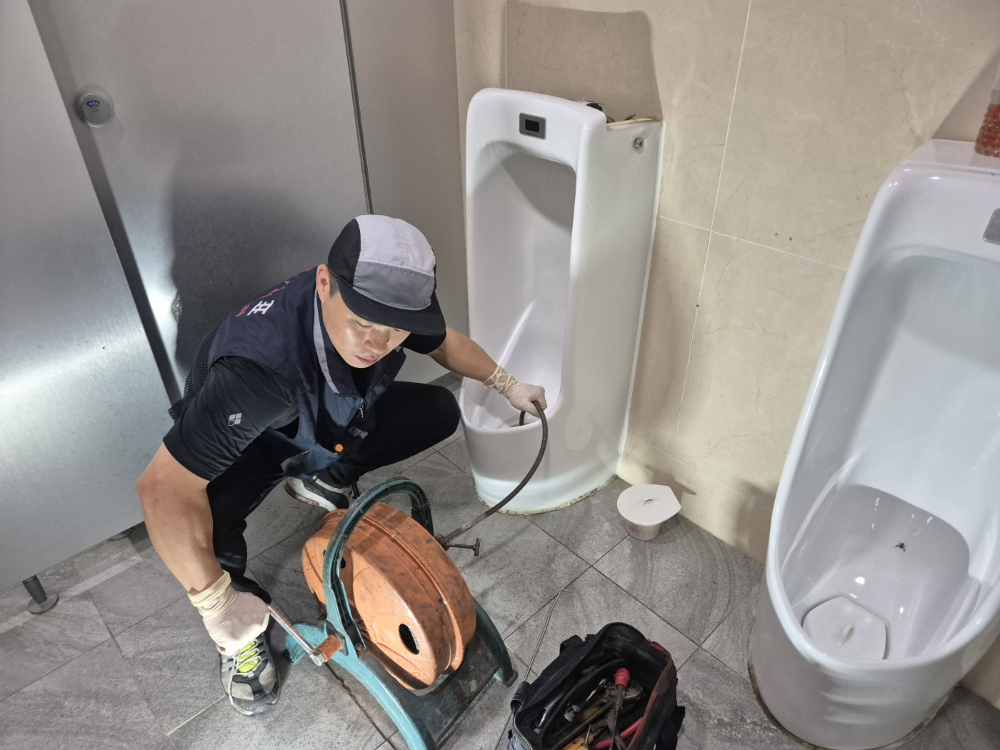
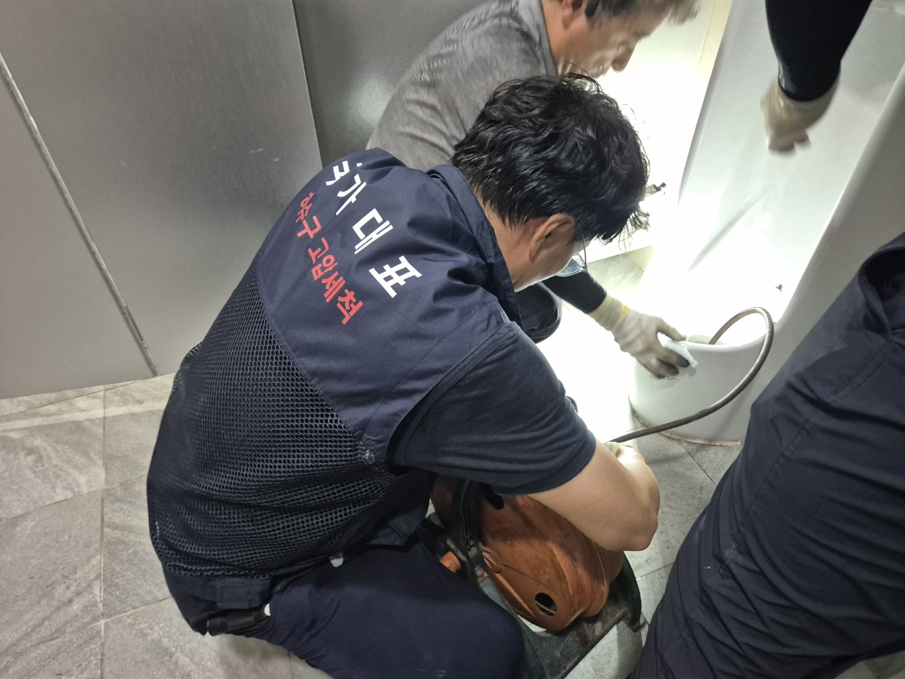
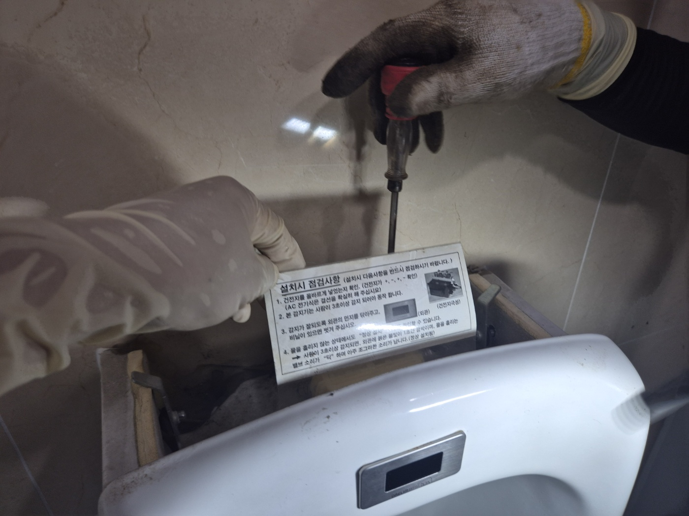
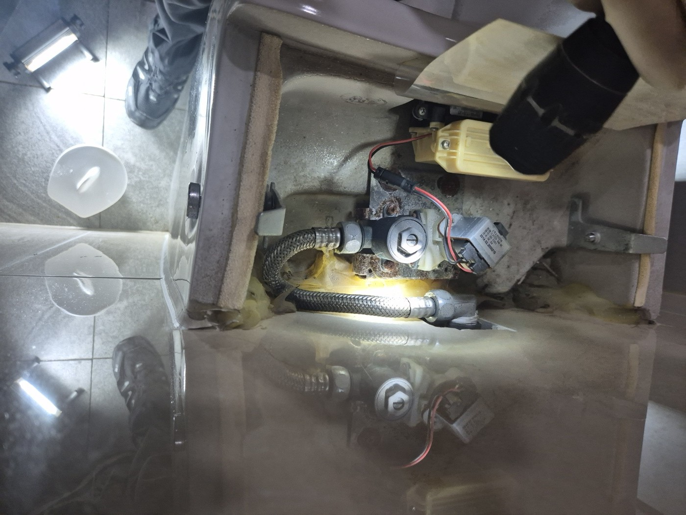
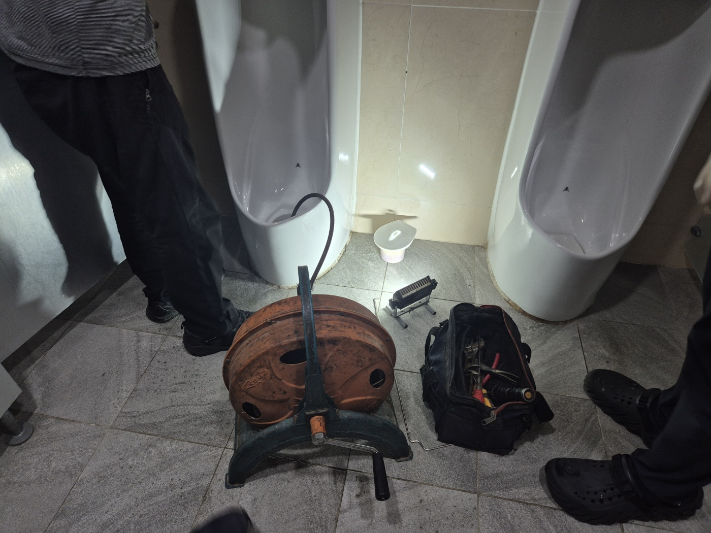
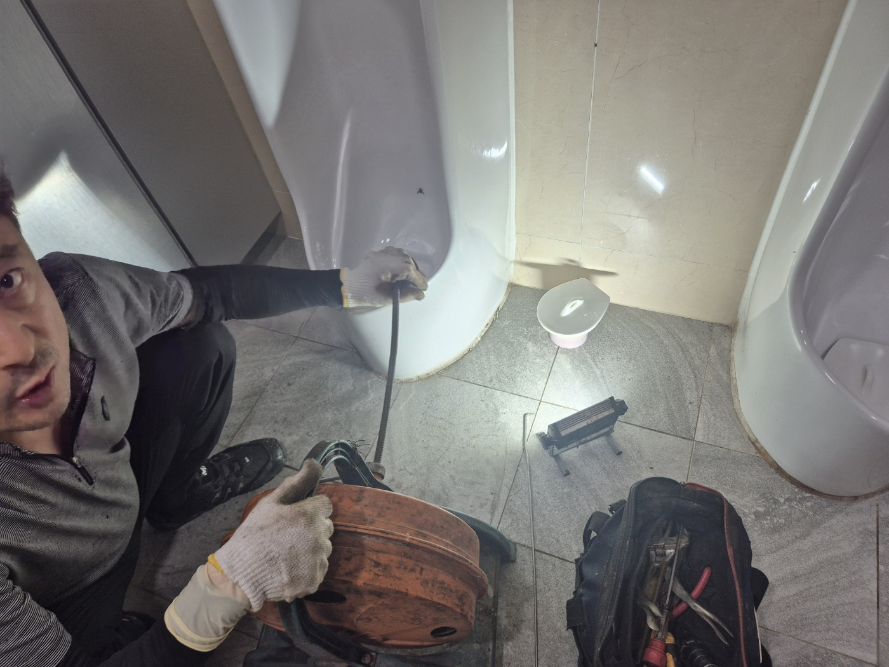
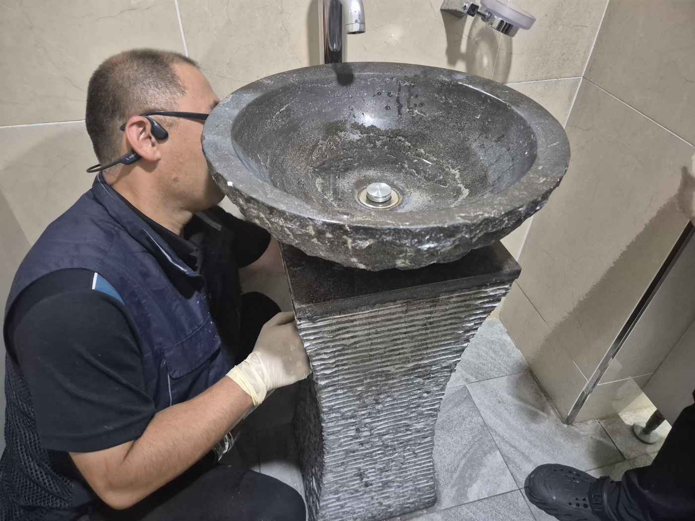

안녕하세요.. 고고고 설비입니다.. 오늘은 평택시 비전동에 있는 회사 건물 화장실에서 소변기 두 대가 막히고, 세면대까지 물이 잘 안 빠진다는 신고를 받고 다녀온 현장입니다. 직원분들이 매일 쓰시는 곳이라 최대한 빨리 처리해드리고 싶었어요.
사무실 직원분들이 공용으로 쓰는 화장실이었는데, 소변기 쪽 배수가 눈에 띄게 느려진 상태였습니다.. 오래 방치하면 역류로 이어질 수 있어서, 소변기부터 순서대로 확인하기로 했어요. 평일 근무 시간이라 오가시는 직원분들이 많아서, 통로를 최대한 막지 않게 장비를 한쪽으로 정리해가며 시작했습니다.

전동 드럼 샤프트를 소변기 배관 안으로 밀어 넣고 천천히 돌려가며 막힌 부분을 긁어냈습니다. 회전하는 케이블이 안쪽에서 걸리는 느낌이 들 때마다 속도를 늦춰가며 조심스럽게 밀어 넣었어요. 관계자분도 옆에서 궁금해하시며 계속 지켜봐 주셨습니다.

작업하다 보니 소변기 자동 감지센서 밸브 쪽도 상태가 안 좋아 보여서 함께 열어봤습니다. 오작동이 잦다는 얘기도 들어서, 설치 안내문을 다시 확인해가며 배선과 밸브 상태를 하나씩 점검했어요.

밸브 내부를 열어보니 물때가 꽤 껴 있었고, 배선 연결 부위도 다시 한번 꼼꼼히 확인했습니다. 좁은 공간 안에 부품이 빽빽하게 들어있어서, 랜턴으로 구석구석 비춰가며 하나씩 살펴봐야 했어요.

옆에 있던 두 번째 소변기도 같은 방식으로 이어서 작업했습니다. 공구가방과 작업등까지 펼쳐놓고 두 대를 순서대로 확실하게 처리했어요.

작업 공간이 좁다 보니 관계자분이 드럼 샤프트 몸체를 잠깐 잡아주시기도 했습니다.. 카메라를 보고 웃으시길래 저도 모르게 같이 웃었네요. 덕분에 훨씬 수월하게 마무리할 수 있었어요.

소변기 작업을 마친 뒤엔 세면대 쪽도 같이 봐드렸습니다. 돌 재질로 만들어진 독특한 세면대였는데, 배수구 안쪽까지 상태를 확인해가며 이물질 여부를 점검했어요. 돌 재질 특성상 표면이 거칠어서 물때가 더 잘 붙어있는 편이었습니다.

세면대는 배수구 주변에 물때만 살짝 낀 정도라 심하게 막힌 건 아니었지만, 그대로 두면 소변기처럼 될 수 있어서 함께 정리해드렸습니다.
작업 마치고 소변기 두 대, 세면대까지 다시 물을 내려보면서 배수 상태를 확인했습니다. 처음보다 확실히 시원하게 잘 빠지는 걸 확인하고 나서야 정리하고 나왔어요. 여러 직원분이 함께 쓰는 화장실은 소변기 쪽에 이물질이 쌓이는 속도가 빨라서, 정기적으로 점검해주시는 게 좋습니다. 감지센서 밸브도 오래되면 물때 때문에 오작동할 수 있으니 같이 봐두시길 권해드려요.
고고고 설비는 주택, 아파트, 원룸, 상가, 공장의 생활 하수 오수 배관을 관리해 주는 업체입니다. 고고고 설비에 전화 주시면 친절상담 정확한 진단 확실한 해결로 보답해 드리겠습니다!!